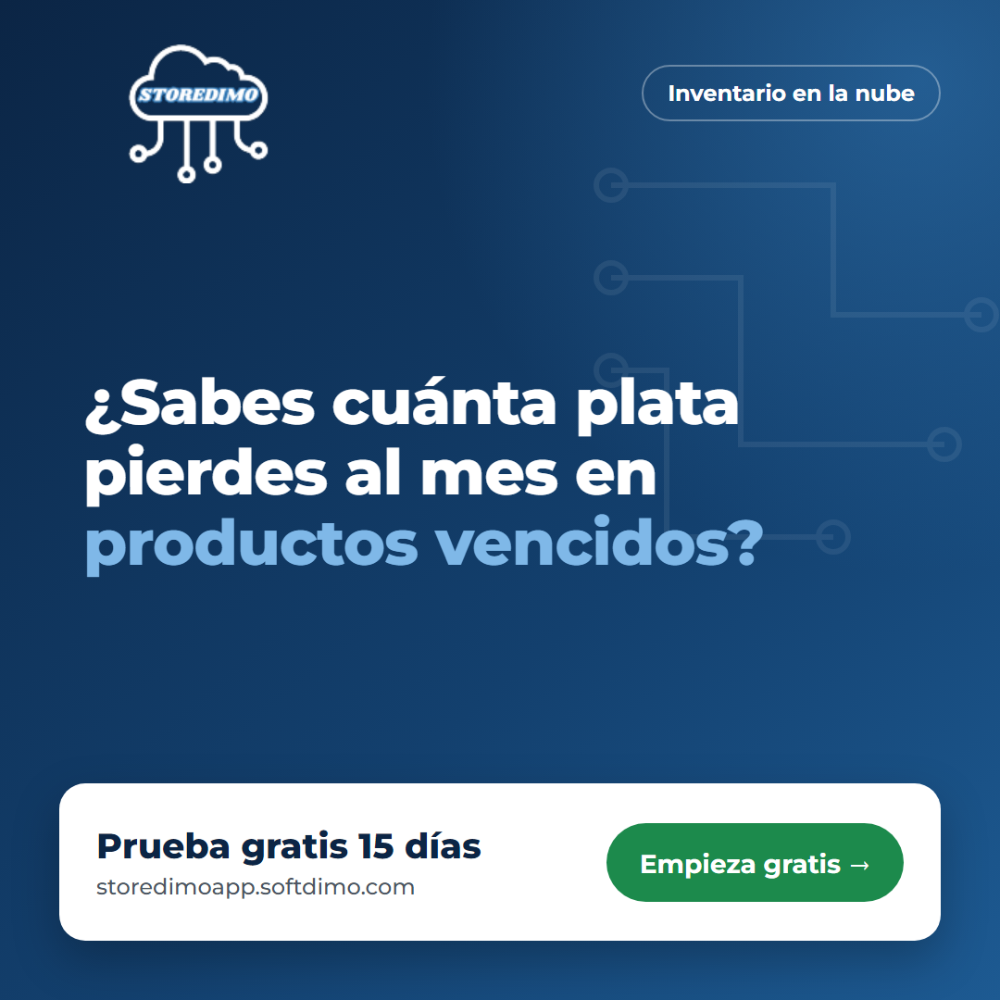
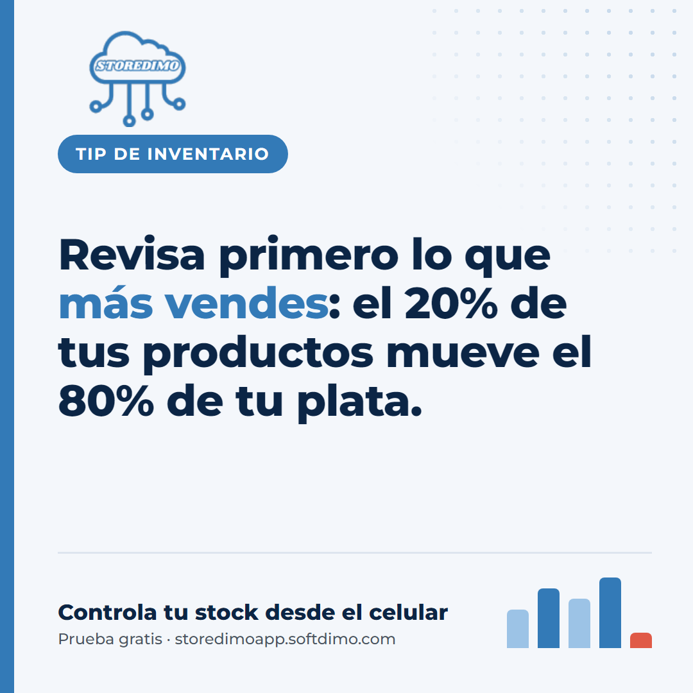
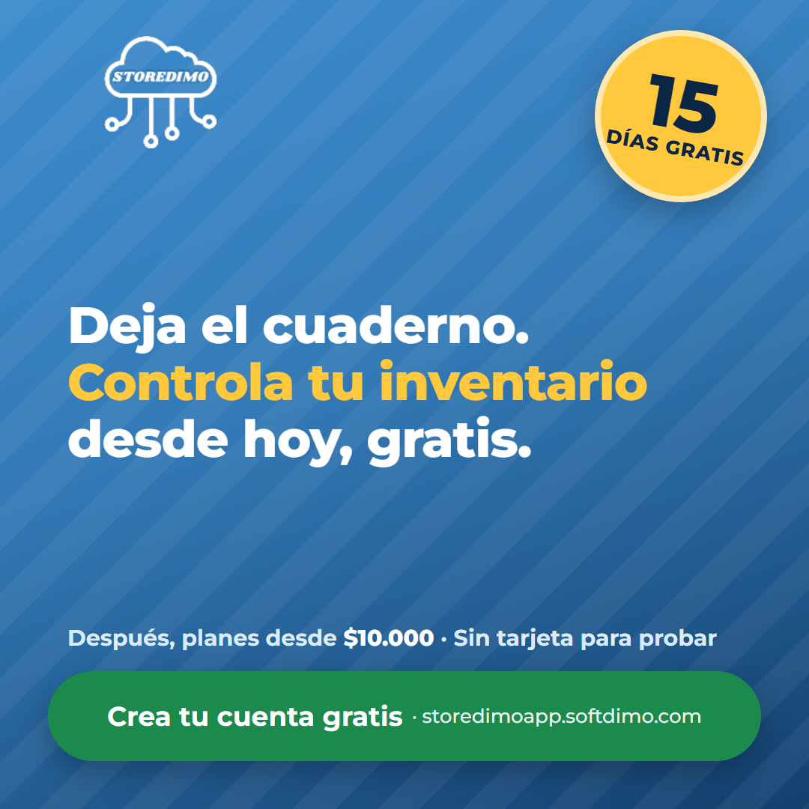

Herramienta interna de Softdimo: cómo funciona el sistema automático que usamos para conseguir clientes para Storedimo y qué le toca hacer a cada persona del equipo. No es un producto ni un servicio para nuestros clientes.
Softdimo · Uso internoOctubre 2026 · Versión 1.1
Construido con n8n + Claudestoredimoapp.softdimo.com
1.¿Qué es y para qué sirve?
En una frase: es una herramienta interna de Softdimo, hecha con automatizaciones en n8n, que trabaja como nuestro equipo de marketing y ventas para vender Storedimo: crea contenido para nuestras redes, atiende a los interesados con un asesor de inteligencia artificial llamado "Dimo" y le hace seguimiento a cada persona que se registra en la prueba gratis.
No es un producto para clientes: no es un módulo de Storedimo ni un servicio de marketing que vendamos u ofrezcamos. Los clientes no lo reciben ni lo usan; solo ven sus resultados (nuestras publicaciones, el chat con Dimo y los correos de la prueba).
El objetivo es simple: que más negocios prueben Storedimo y que más de esas pruebas se conviertan en clientes que pagan. La automatización hace el trabajo repetitivo y el equipo se encarga de lo que necesita criterio humano: aprobar contenido, grabar videos y cerrar ventas. Ninguna publicación sale sin aprobación y los prospectos más interesados siempre los atiende una persona.
Lo único que vendemos: Storedimo
Storedimo es un sistema de inventario 100% en la nube para pequeños y medianos negocios (tiendas, minimercados, ferreterías, droguerías, papelerías, distribuidoras). Permite controlar clientes, proveedores, categorías, productos, compras, ventas, stock en tiempo real y bajas por daño, robo o vencimiento.
Chat con DimoEl interesado conversa con el asesor IA
5
Lead guardadoQueda en la hoja con su nivel de interés
›
6
Contacto humanoLlamamos a los "calientes"
›
7
Prueba gratisCorreos los días 0, 3, 10 y 14
›
8
ClientePaga un plan y se detienen los correos
Automático (n8n)Lo hace una personaResultado visible
2.Los 4 flujos automáticos
En n8n, cada automatización se llama workflow (flujo). El sistema tiene cuatro:
01
Agente de Ventas "Dimo"
Chat con inteligencia artificial (Claude)
Funcionando
Cuándo actúa
Cada vez que alguien escribe en el chat.
Qué hace
Pregunta por el negocio, explica cómo Storedimo resuelve su problema, responde objeciones ("es caro", "uso Excel") e invita a la prueba gratis. Cuando obtiene nombre y contacto, lo guarda en la hoja Leads.
Qué NO hace
No inventa precios, descuentos ni funciones. Si no sabe algo, promete que el equipo responderá y lo deja anotado.
Resultado
Una fila por prospecto en la pestaña Leads.
02
Generador de contenido semanal
Todos los lunes a las 7:00 a. m.
Funcionando
Qué hace
Escribe 7 publicaciones (una por día) para Facebook, Instagram, TikTok y LinkedIn, cada una dirigida a un tipo de negocio diferente. Incluye gancho, texto, idea de imagen o video, llamado a la acción y hashtags.
Mezcla semanal
2 de dolor del cliente · 2 educativas · 1 demostración · 1 caso de ejemplo · 1 oferta.
Resultado
7 filas nuevas en la pestaña Contenido con estado pendiente_aprobacion.
03
Seguimiento de la prueba gratis
Se activa cuando alguien se registra en Storedimo
En configuración
Cuándo actúa
La aplicación Laravel avisa a n8n cada vez que se crea una suscripción Trial.
Qué hace
Envía 4 correos: día 0 bienvenida con los primeros pasos, día 3 valor (control de bajas), día 10 "te quedan 5 días" y día 14 "mañana termina tu prueba".
Detalle clave
Antes de los correos de los días 10 y 14 pregunta a Storedimo si el cliente ya pagó. Si ya pagó, no le escribe más.
Falta
Agregar el código de integración en Laravel y conectar Gmail.
04
Publicación automática en Facebook e Instagram
Todos los días a las 9:00 a. m. (hora Colombia)
En configuración
Qué hace
Busca en la hoja las publicaciones aprobado de ese día para Facebook o Instagram, crea la imagen con nuestra plantilla (Bannerbear) y la publica con su texto. Luego cambia la fila a publicado.
No toca
TikTok y LinkedIn: esas publicaciones las hace el equipo a mano.
Falta
Crear las plantillas en Bannerbear y conectar la página de Facebook y la cuenta de Instagram.
3.La hoja de cálculo: nuestro tablero
Todo lo que hace el sistema queda en una sola hoja de Google Sheets compartida con el equipo. Tiene dos pestañas.
Pestaña "Contenido": el calendario de publicaciones
Cada fila es una publicación. La columna estado indica en qué paso va:
pendiente_aprobacion→aprobado→publicado
Estado
Qué significa
Quién lo pone
pendiente_aprobacion
La IA la escribió y nadie la ha revisado.
n8n (automático)
aprobado
Revisada y lista. Si es de Facebook o Instagram, n8n la publicará el día indicado en dia.
El equipo
publicado
Ya salió en redes. En imagen_url queda el enlace de la imagen usada.
n8n (automático)
Columnas: dia, red, tipo, negocio_objetivo, gancho (la frase que va en la imagen), texto, idea_visual, cta, hashtags, estado, imagen_url.
Pestaña "Leads": los prospectos
Cada fila es una persona que conversó con Dimo. Lo más importante es la columna interes:
Interés
Qué significa
Qué hacemos
humano
Pidió hablar con una persona, soporte, facturación o un plan a la medida.
Contactar el mismo día
caliente
Muy interesado; está listo para probar o comprar.
Contactar en menos de 24 horas por WhatsApp
tibio
Interesado pero con dudas u objeciones.
Revisar las notas y hacer seguimiento en la semana
frio
Solo estaba mirando.
Nada por ahora
Otras columnas: nombre, negocio, ciudad, correo, whatsapp, control_actual (cómo maneja hoy su inventario) y notas (dolores, objeciones y preguntas pendientes).
No cambies los encabezados de la hoja
Los nombres de las columnas (fila 1) deben quedar exactamente como están: en minúscula, sin tildes ni espacios. Si se cambia uno, por ejemplo negocio por negocios, los flujos dejan de funcionar. Para aprobar, escribe aprobado en minúscula.
4.¿Qué le toca hacer al equipo?
La automatización hace la mayor parte del trabajo, pero necesita estas tareas humanas para funcionar bien:
Cuándo
Tarea
Tiempo aprox.
Lunes
Revisar las 7 publicaciones nuevas de la pestaña Contenido. Corregir lo necesario, borrar las que no sirvan y escribir aprobado en las buenas.
30 min
Lunes a martes
Hacer las piezas de TikTok y LinkedIn aprobadas: grabar la pantalla de Storedimo según la idea_visual y editar en CapCut, o diseñar en Canva.
1 a 2 horas
Todos los días
Revisar la pestaña Leads y contactar a los humano y caliente. Anotar el resultado en notas.
15 a 30 min
Todos los días
Revisar en Facebook e Instagram que las publicaciones salieron y responder comentarios y mensajes.
15 min
Una vez por semana
Grabar al menos 1 video real del sistema funcionando (por ejemplo, registrar una venta y ver cómo baja el stock). Es el contenido que más vende.
Lee la fila completa: el tipo de negocio, cómo controla hoy su inventario y las notas. Dimo ya te dejó el contexto; no le vuelvas a preguntar lo mismo.
Escríbele por WhatsApp mencionando su negocio: "Hola Carlos, soy [nombre] de Storedimo. Vi que manejas tu ferretería en Excel…"
Ofrécele 15 minutos para configurar su prueba gratis juntos.
Anota en notas qué pasó y la fecha.
Regla de oro para aprobar contenido
Antes de aprobar, pregúntate: ¿un dueño de tienda entendería esto en 3 segundos? ¿Promete algo que Storedimo no hace? ¿El precio y los datos son correctos? Si algo no cuadra, corrígelo o no lo apruebes.
5.Las plantillas de imagen
Para Facebook e Instagram, n8n arma la imagen automáticamente: toma el gancho de la publicación y lo escribe sobre una de estas tres plantillas, según el tipo.

DolorPara publicaciones sobre pérdidas, vencidos, robos y descuadres.

TipPara publicaciones educativas y demostraciones de módulos.

OfertaPara la invitación directa a la prueba gratis y los casos de ejemplo.
El gancho debe ser corto
La frase de la imagen se lee mejor con máximo 12 a 15 palabras. Si el gancho es muy largo, acórtalo en la hoja antes de aprobar. El texto completo va en la descripción de la publicación, no en la imagen.
6.Herramientas, seguridad y archivos
Herramientas y cuentas de Softdimo que usa el sistema
Herramienta
Para qué se usa
n8n
La plataforma donde viven y se ejecutan los 4 flujos.
Claude (Anthropic)
La inteligencia artificial que conversa como Dimo y escribe el contenido.
Google Sheets
El tablero compartido: pestañas Leads y Contenido.
Gmail
Envía los correos de seguimiento de la prueba gratis.
Bannerbear
Genera las imágenes a partir de las plantillas.
Meta (Facebook / Instagram)
Donde se publican automáticamente las publicaciones aprobadas.
Storedimo (Laravel)
Avisa a n8n de cada nueva prueba e informa si el cliente ya pagó.
Seguridad
Las contraseñas, llaves de API y tokens no se comparten por chat ni por correo. Quedan guardados como credenciales dentro de n8n. Si necesitas acceso a algo, pídeselo al responsable del proyecto.
Archivos del proyecto
Archivo o carpeta
Contenido
workflows/
Los 4 flujos de n8n, listos para importar.
prompts/system_prompt_asesor.md
Las instrucciones y el conocimiento de Dimo.
plantillas/
Fondos y vistas previas de las imágenes; en fuente/ están los diseños editables.
laravel/INTEGRACION_LARAVEL.md
Código para conectar Storedimo con n8n.
GUIA_PUBLICACION_FB_IG.md
Configuración técnica de Bannerbear, Facebook e Instagram.
README.md
Instalación técnica completa.
7.Problemas frecuentes y próximos pasos
Si pasa esto…
Revisa esto
El lunes no aparecieron publicaciones nuevas
Que el flujo 02 esté activo en n8n y revisa la pestaña Executions para ver el error.
Una publicación aprobada no salió en redes
Que estado diga exactamente aprobado, que dia sea la fecha de hoy y que red sea facebook o instagram.
Error "Column names were updated…"
Alguien cambió un encabezado de la hoja. Devuélvelo a su nombre original.
Dimo respondió algo incorrecto
Avisa al responsable con una captura. Las instrucciones de Dimo se pueden ajustar (archivo prompts/system_prompt_asesor.md).
Cambió un precio o un plan
Hay que actualizarlo en las instrucciones de Dimo, en el generador de contenido y en la plantilla "Oferta".
Error de token en Facebook o Instagram
El token de Meta venció. El responsable debe generar uno nuevo.
Próximos pasos del proyecto
Terminar la integración con Laravel para activar el seguimiento de la prueba gratis (flujo 03).
Montar las plantillas en Bannerbear y conectar Facebook e Instagram (flujo 04).
Conectar a Dimo con WhatsApp Business, el canal que más vende en Colombia.
Completar en Storedimo las descripciones de los planes, que hoy son texto de relleno.
Revisar la escala de precios: Básico ($110.000) y Profesional ($121.000) casi cuestan lo mismo.
Crear una página de ventas (landing) con video demo y botón de WhatsApp.
Simplificar el formulario de la prueba gratis: pedir solo nombre, negocio, correo y celular.
Conseguir el logo en alta resolución para mejorar las imágenes.